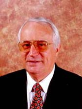

|
TRANSFIGURAÇÃO
E MATERIALIZAÇÃO DE PESSOAS
Prof.Válter
Franceschini
Os
fenômenos parapsicológicos oferecem um campo vastíssimo para
fraudes, ilusionismo como suposta ação paranormal e tantas outras
apresentações e situações enganadoras, iludindo e distorcendo a
verdade sobre os fenômenos PSI.
É bastante comum e favorece grandes audiências nos meios de
comunicação, principalmente através da TV, aparecerem ou se
apresentarem pessoas apregoando bons dotes paranormais, bem
desenvolvidos mentalmente com as mais diversas previsões, conceitos
e as costumeiras afirmações carregadas de muito misticismo, sem
base e sem consistência científica.
Alguns até procuram mostrar toda uma comprovação elaborada por
sua única e exclusiva responsabilidade. Entretanto, sabemos que os
fenômenos PSI não ocorrem exatamente da forma e nas condições
costumeiramente apresentadas.
Ouvimos e vemos também alguns ilusionistas com suas mágicas
fabulosas e bastante interessantes, afirmarem que não são
paranormais. Tal afirmação demonstra grande desconhecimento da
ciência parapsicológica pois todos nós somos paranormais.
É preciso destacar que algumas pessoas possuem excelentes
qualidades PSI bem desenvolvidas os quais denominamos de paranormais
ativos. Outras com menor sensibilidade e sugestionabilidade.
Os fenômenos de TRANSFIGURAÇÃO e de MATERIALIZAÇÃO oferecem um
prato cheio para truques, mágicas das mais diversas, fraudes e,
infelizmente, um bom caminho para iludir e explorar o público
leigo. É preciso tomar bastante cuidado para não se deixar
influenciar enganosamente.
Todos nós somos possuidores de uma energia de origem humana
(Telergia) e esta, quando condensada, denomina-se Ectoplasma. Essa
energia pode ser moldada mentalmente para representar membros,
pessoas incompletas, objetos, animais, etc. Essa representação
nunca é perfeita, impecável. Ela apresenta imperfeições em
vários aspectos. A perfeição, a nitidez e exímios contornos
levam à fraude, ou ao truque ou à alguma mágica.
Através dessa energia é possível exteriorizar o fenômeno da
TRANSFIGURAÇÃO que “ consiste em uma simples modificação do
próprio corpo do dotado. Não é uma pessoa nova que é
materializada; seria o próprio dotado revestido de ectoplasma e
inclusive corporalmente modificado, representando outra pessoa.”
A transfiguração é um fenômeno que já tive a oportunidade de
presenciar e pesquisar. É pois um fenômeno parapsicológico
possível e que ocorre.
Diferentemente, a MATERIALIZAÇÃO “seria a reprodução perfeita
de um novo ser. O ser materializado, quando se tratasse de um ser
vivo, representaria todas ou as principais características do ser
vivo; peso, movimento e até calor, respiração, etc.”
O fenômeno da materialização não é aceitável e nem real. Está
muito mais para uma alucinação visual ou uma ilusão ótica,
ilusão esta mostrada cansativamente nos meios de comunicação.
Cuidado, pois, com os seus pensamentos mistificados e pouco
estruturados, bem como com o seu padrão de vida. Como ensina
U.S.Andersen : -“ A melhor maneira de melhorar o padrão de vida
está em melhorar o padrão de pensamento.”
O professor Válter Franceschini é escritor,
Conferencista parapsicólogo, professor dos Fenômenos paranormais
(PSI), contador economista e
administrador de empresas. Fones (15) 3231.0958 e 3231.7750
Outras informações dos nossos trabalhos você poderá
obtê-las
através do e-mail- [email protected]
e nos sites www.geocities.com/cipaso
e www.sorocaba.com.br
|